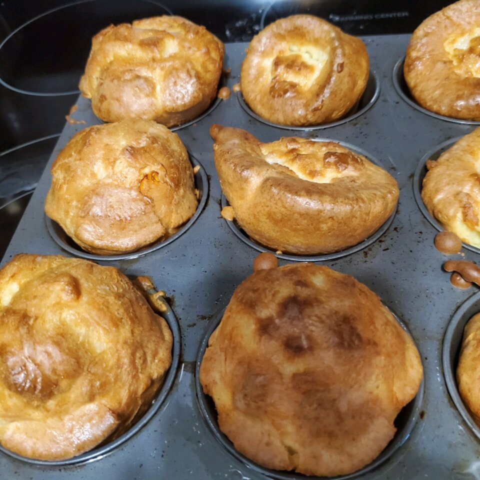

Description
A delicious 15-minute Yorkshire pudding.
For extra flavor, add gravy.
Ingredients
- 2 eggs
- 1 pinch salt
- 1 cup all-purpose flour
- 1 cup milk
Steps
-
Preheat oven to 350 degrees F (175 degrees C). Grease a small
glass baking dish; place in oven to heat while you prepare the
pudding.
-
Beat eggs with a pinch of salt in a bowl until smooth; add milk
and flour and whisk until you have a smooth batter.
-
Pour batter into the hot baking dish and bake in preheated oven
until no longer wet in the center, 10 to 12 minutes.
Nutrition Facts
Per Serving: 90 calories; protein 4.2g; carbohydrates 13.4g; fat 2g;
cholesterol 48.9mg; sodium 49.7mg. Full Nutrition